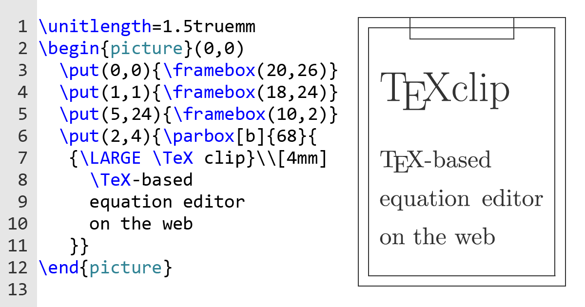

Bevezetés TEX-be tárgy tematikus leírása:
- Bevezetés, ismerkedés a szövegszerkesztő rendszerekkel.
- A TeX filozófiája. Tipográfiai alapfogalmak.
- Az első ismerkedés, az első dokumentum, szintaktika.
- A dokumentum formázása, kontrollsorozatok.
- Szöveg formázása, igazítása és karakterkészletek. Táblázatok. Formai elemek. Matematikai mód.
- Saját kontrollsorozat és operátorok készítése.
- Hivatkozások. Grafikai csomagok használata.
- Miktex, Winedit. Hibaüzenetek. A LATEX alapjai.
- Fóliakészítési lehetőségek pdf-ben, dinamikus hatások.
|
 |